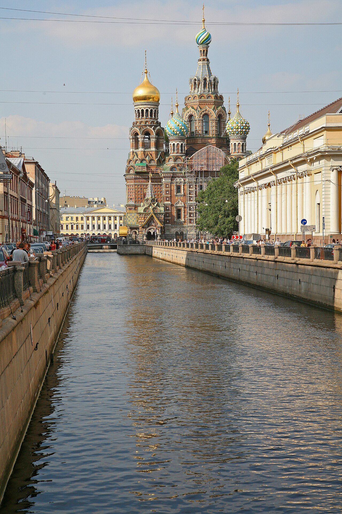

TRIPROTARVISOR
La Venezia del Nord

Chiesa del Salvatore sul Sangue Versato
Il nome è già la metà della storia. Il 1º marzo 1881, davanti alla cattedrale di San Pietro e Paolo, uno studente ucraino di nome Kazakov sparò allo zar Alessandro II mentre la neve copriva la piazza. Morì lì per l'attrattore, e due giorni dopo lo zar venne ucciso in un attentato, questa volta davanti al palco da cui passava il corteo funebre.
Sul posto della scena, dove c'era un piccolo chiosco di birra, il governo decise di costruire una chiesa. I lavori iniziarono nel 1883 e finirono nel 1907, quindi ventiquattro anni di cantiere per un edificio che doveva essere la risposta del popolo all'assassinio. Per costruirlo si chiamarono architetti russi, perché non volevano che l'arte del paese che li aveva perseguiti fosse il modello.
Perché sembra diversa da tutte le altre
A San Pietroburgo le chiese ortodosse hanno di solito cupole a cipolla, come la Trasfigurazione. Questa ha invece un profilo bianco con ben dodici cupole colorate, disposte a cerchio intorno al campanile centrale, e lo stesso vale per la facciata: i mattoni sono multicolori, come i mattoncini Lego, ma il progetto doveva richiamare la Russia del Seicento, e per questo lo stile ufficiale era quello del "moscovite antico".
Anche il nome della chiesa non ha niente a che fare con il Salvatore: vuol dire "salvatore del sangue versato", e il Salvatore è il Cristo, ucciso sulla croce e salvato attraverso il sangue che ha versato per noi.
La chiesa dei mosaici
La cosa più incredibile è dentro. Le pareti sono coperte da mosaici per circa 7.000 metri quadrati, una delle collezioni di mosaici più grandi d'Europa, e per questo la chiamano "la chiesa dei mosaici". Le tessere sono piccolissime, in certi casi meno di un centimetro, e dentro ogni scena si può nascondere un dettaglio assurdo che nessuno ha ancora spiegato.
L'interno si visita con biglietto e senza flash, e si può anche salire al campanile per 124 gradini, se le gambe reggono.
La chiesa sta sul canale Griboedov, a due passi dalla Prospettiva Nevskij, e questo è il posto giusto per guardarla: dalla riva opposta si vedono tutte le cupole in una volta sola, ed è la foto che abbiamo messo qui in alto.